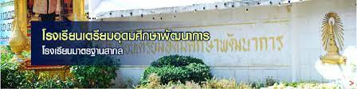

History
School identity
School vision
Home
วิสัยทัศน์ของโรงเรียน
“มุ่งส่งเสริมและพัฒนาผู้เรียนให้มีคุณภาพสู่มาตรฐานสากล มีคุณลักษณะเป็นพลโลกและอยู่ในสังคมได้อย่างมีความสุข”
“To Promote and Develop Learners to Live in Harmony and Also to Be Able to Reach the International Standards with World Class Character"
พันธกิจ
1. พัฒนาผู้เรียนให้มีคุณภาพสูงขึ้นสู่มาตรฐานสากล บนพื้นฐานของความเป็นไทย
2. ส่งเสริมผู้เรียนให้มีคุณธรรม ยึดในหลักประชาธิปไตย มีคุณลักษณะเป็นพลโลก
3. บริการการศึกษาแก่นักเรียนในเขตพื้นที่บริการอย่างทั่วถึง
4. สนับสนุนผู้บริหารให้มีความสามารถในการบริหารอย่างมีประสิทธิภาพ
5. พัฒนาครูให้มีองค์ความรู้ และมีสมรรถนะสูง มีความสามารถในการจัดการเรียนรู้
6. พัฒนาระบบการบริหารโดยใช้โรงเรียนเป็นฐานสร้างความเข้มแข็งด้วยระบบเทคโนโลยีสารสนเทศ
7. จัดการศึกษาแบบมีส่วนร่วม และสร้างเครือข่ายกลุ่มร่วมพัฒนา
เป้าประสงค์
1. นักเรียนเป็นคนดี มีความสุข และเก่งตามมาตรฐานสากล
2. นักเรียนมีคุณลักษณะเป็นพลโลก
3.ครูได้รับการพัฒนาให้มีสมรรถนะสูงขึ้น มีความก้าวหน้าในวิชาชีพ
4. โรงเรียนมีระบบการบริหารที่มีประสิทธิภาพ
5. โรงเรียนมีระบบเทคโนโลยีสารสนเทศเพื่อพัฒนาการศึกษา
6. โรงเรียนบริหารงานที่เกิดจากการมีส่วนร่วมจากทุกภาคส่วน และเอื้อต่อสังคม